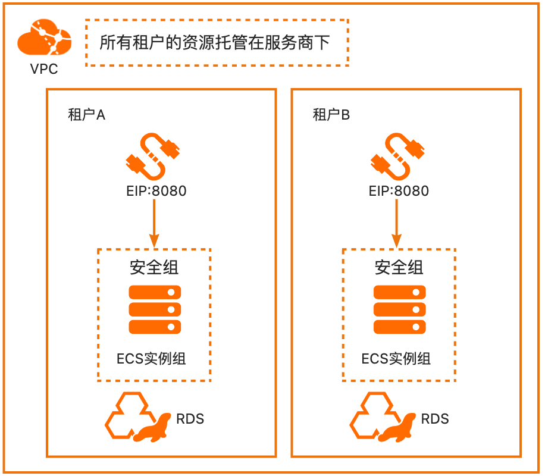

服务模版说明文档
服务说明
本文介绍基于SpringBoot软件包快速构建托管版单租计算巢服务，关于计算巢托管版可以参考帮助文档， 本示例对应的git地址为：springboot-managed-demo 根据该服务模板构建的服务默认包含三种套餐：
| 套餐名 | ECS规格族 | vCPU与内存 | 系统盘 | 公网带宽 |
|---|---|---|---|---|
| 低配版 | ecs.u1-c1m2.large | 内存型c6，2vCPU 4GiB | ESSD云盘 200GiB PL0 | 固定带宽1Mbps |
| 基础版 | ecs.u1-c1m2.xlarge | 内存型c6，4vCPU 8GiB | ESSD云盘 200GiB PL0 | 固定带宽1Mbps |
| 高配版 | ecs.u1-c1m2.2xlarge | 内存型c6，4vCPU 8GiB | ESSD云盘 200GiB PL0 | 固定带宽1Mbps |
本示例会自动的构建计算巢服务，具体的服务构建流程为
- 上传文件并构建计算巢文件部署物
- 创建计算巢服务并关联文件部署物
创建过程大约持续2分钟，当服务变成待提交后构建成功
服务架构
本部署架构为单机ecs部署，通过公网ip 8080端口访问 
服务构建计费说明
测试本服务构建无需任何费用，创建服务实例涉及的费用参考服务实例计费说明
RAM账号所需权限
服务实例计费说明
由于本服务式托管版服务，资源属于服务商，所以创建服务实例的费用由服务商承担，主要涉及：
- 所选vCPU与内存规格
- 系统盘类型及容量
- 公网带宽
目前提供如下套餐：
| 套餐名 | ECS规格族 | vCPU与内存 | 系统盘 | 公网带宽 |
|---|---|---|---|---|
| 低配版 | ecs.u1-c1m2.large | 内存型c6，2vCPU 4GiB | ESSD云盘 200GiB PL0 | 固定带宽1Mbps |
| 基础版 | ecs.u1-c1m2.xlarge | 内存型c6，4vCPU 8GiB | ESSD云盘 200GiB PL0 | 固定带宽1Mbps |
| 高配版 | ecs.u1-c1m2.2xlarge | 内存型c6，4vCPU 8GiB | ESSD云盘 200GiB PL0 | 固定带宽1Mbps |
服务实例部署流程
部署参数说明
| 参数项 | 说明 |
|---|---|
| 实例密码 | 服务器登录密码,长度8-30，必须包含三项（大写字母、小写字母、数字、 ()`~!@#$%^&*_-+= |
部署步骤
- 部署链接

- 单击部署链接，进入服务实例部署界面，根据界面提示，填写参数。

- 确认参数后点击立即创建。

- 租户创建出新的服务实例，处于待部署状态，需要服务商确认后才可以进入部署流程。

- 服务商点击部署。

- 随后该服务实例处于"部署中"状态。

- 等待部署完成后就可以开始使用服务，进入服务实例详情点击visitUrl。

- 返回结果

服务详细说明
本文通过将代码 构建后，将deploy.sh和application.jar打包成package.tgz，通过计算巢部署物上传为文件部署物，并分发生成SpringBootPackage，然后在模版中ALIYUN:: ECS::RunCommand执行命令
yum install -y java
mkdir -p /home/admin/application
cd /home/admin/application
wget '{{ computenest::file::springboot }}' -O package.tgz
tar xvf package.tgz
/bin/bash deploy.sh start
{{ computenest::file::springboot }} 为占位符，会由计算巢服务替换成文件部署物SpringBootPackage的http下载地址
templates/template.yaml主要由三部分组成
- Parameters定义需要用户填写的参数，包括付费类型，实例规格和实例密码可用区参数
- Resources定义需要开的资源，包括新开的vpc, vswitch和ecs实例, 以及执行命令的定义
- Outputs定义需要最终在计算巢概览页中对用户展示的输出
服务配置
服务交付
其他
© 2009-2022 Aliyun.com 版权所有